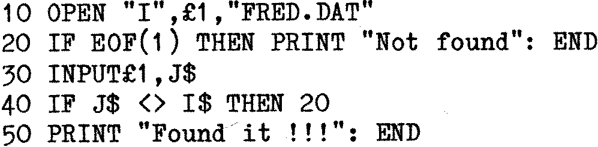

80-Bus News |
September–October 1983 · Volume 2 · Issue 5 |
| Page 63 of 67 |
|---|
So how are these problems overcome? Sequential files always are a problem, although if the data was entered in a fixed field/record format, it is often possible to read the data by random access methods. MBASIC allows this, but it’s up to you, the programmer, to know what it was you were after, and it still leaves the problem of which record is to be randomly accessed. Normally speaking the only way to find something in a sequential program is to run through it from start to end looking for the match, thus, we are looking for a match with I$ from the sequential file FRED:

The loop is tight and it surprising just how fast this can be read. However, the time to access is directly related to the length of the file and the position of the record in the file. Of course the IF would usually be a little more complicated as it is not often looking for a complete match, more usually the compare is for the key which would be a part of J$. Despite this the process is still fast and can whip through an 8K file in a few seconds.
The random access file is faster in most circumstances, and shows an advantage over the sequential file after only a few records. Secondly the access time is pretty constant, consisting of the time to move the disk head (variable, depending on how close it was to its destination) and the time taken to locate and read the sector(s). Head step times vary with drive manufacturer, from 3mS per track for Teac and Mitsubishi drives to 40mS per track for the slowest of the Shugart drives. Nascom now use half height Teac drives but don’t take full advantage of the head step time and end up at 6mS per track. This gives Nascom the edge in seek time over Gemini who clock in with 25mS per track with Pertec or 10mS with Micropolis drives. Not that head seek time matters much unless a lot of ‘disk churning’ is to be done.
As an aside, it’s interesting to note that the Gemini based version of the Kenilworth portable computer uses the half height Teac drives and achieves the minimum possible head seek time of 3mS in a rather unusual way. The reason Nascom can only acheive 6mS is because the 17XX controller chip used in the Nascom disk controller card will only produce a minimum head step pulse of 6mS when used with the 2MHz clock which has to be used for 5.25″ drives. The Gemini GM829 controller card also uses the 17XX series of controller chip, so on the face of it the Gemini card is stuck with the same limitation. Now it just so happens that 8″ drives with their double data rate must use a 4MHz clock so a head step pulse repetition rate of 3mS could be achieved with a 4MHz clock. The Gemini card has one advantage over the Nascom, and that is software selectable clock rates, so what is done is that the Gemini written Teac routine which steps the heads changes the clock speed to 4MHz during head stepping and changes it back afterwards. Neat eh??
Anyway, back to the point. It takes typically something like half a second to locate and read any point on the disk, so a random access record could be found in that time. The only problem would be knowing which record to access, which brings us to the knotty problem of indexing. The obvious way of finding the required record is to look up the key and its appropriate record number in an array. So given that K$(X) contains the keys, R(X) contains the
| Page 63 of 67 |
|---|